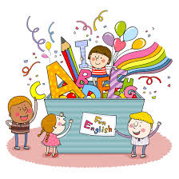

Lesson 1

- 1. 동사 verbs
-
영어는 시간에 대해 자세히 표현하는 언어이며,
말하는 사람이 정확히
표현해야 한다.
-
변하지 않는 사실이나 일반적 사실,
반복적으로 이루어지는 행동 등,
원래 그렇다고 할 수 있는 것들은
동사를 원래 모양 그대로 써서 사용한다.
문장변형
(평서문>부정문>의문문>의문사)

- 2. ~ing 형
-
(듣는 사람이 시간에 집중하게 됨) ▶ n || adj
-
우리는 TV를 별로 보지 않는다.
We don't watch TV very often.
-
나는 그를 그다지 좋아하지 않는다.
I don't like him very much.
-
나는 영어를 잘하지 못한다.
I don't speak English very well.

- 3. 동사 s 발음
-
▶ Voiced (성대가 울리는 소리) : / z /
예) study -> studies
-
▶ Unvoiced (성대가 울리지 않는 소리)
/ s /
예) like -> likes
-
▶ ~ch, ~sh, ~s + 'es'
/ iz /
예) watches, washes, dances